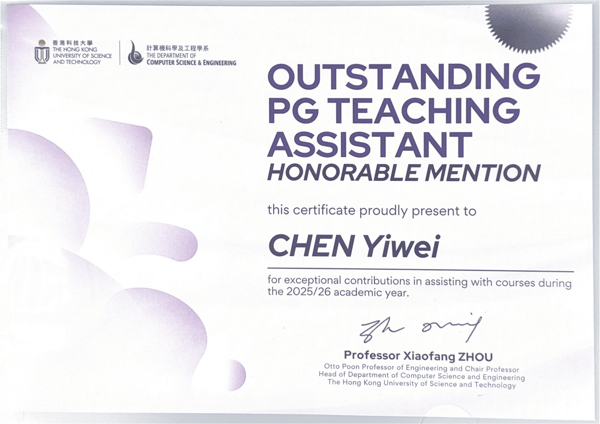

RA-L · 2026
Good afternoon
HKUST · Computer Science and Engineering
Yiwei Chen
Marine Vision Intelligence
PhD student at CSE, The Hong Kong University of Science and Technology.
“Every Cloud Has a Silver Lining.”
01
About
I am Yiwei Chen, also Jackson, a third-year PhD student in the Department of Computer Science and Engineering at The Hong Kong University of Science and Technology.
I work on computer vision for marine and biology studies: recognition, and the problems that sit between 2D and 3D vision. At HKUST I work closely with Prof. Ziqiang Zheng (UESTC) and am supervised by Prof. Sai-Kit Yeung.
If you would like to talk about the work, or about a collaboration, write to jackson.chen.yiwei@gmail.com or ychenmb@connect.ust.hk.
02
Publications
WACV · 2026
ORCA: Object Recognition and Comprehension for Archiving Marine Species
Oral
ECCV · 2024
MarineInst: A foundation model for marine image analysis with instance visual description
OralOral Presentation Award
arXiv · 2024
Exploring boundary of GPT-4V on marine analysis: A preliminary case study
03
News
- MaskGuide accepted at RA-L.
- ORCA accepted at WACV 2026, as an oral.
- Started the PhD at HKUST.
- MarineInst received an Oral Presentation Award at ECCV 2024.
- MarineInst accepted at ECCV 2024.
04
Experience
Education
PhD, Computer Science and Engineering
The Hong Kong University of Science and Technology
MSc, Information Technology
The Hong Kong University of Science and Technology
BEng, Telecommunications
Huazhong University of Science and Technology
As an undergraduate at the School of Electronic Information and Communications, HUST, I joined Prof. Xiaojun Hei’s innovation program and completed my final-year project with Prof. Xinggang Wang.
Teaching
COMP 2211 Exploring Artificial Intelligence
Spring 2025COMP 2211 Exploring Artificial Intelligence
Fall 2025MSBD 6000Q Vision Language Models for Vision Tasks
Fall 2025Visiting
Visiting student, UESTC, Chengdu
Aug – Nov 2026Award

Mission success!
Seafloor reached · 4,800 m